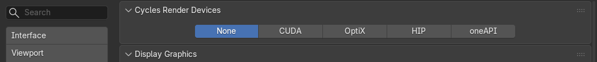

Dépannage
Les problèmes les plus courants et ce qu'il faut faire. Pensez aussi à lire le rapport du projet : il signale beaucoup de ces cas et propose souvent le bon bouton.
Les VDB sont lents à lire
Ce que vous voyez : Blender met longtemps à changer d'image ; la section Export affiche « Slow to read: no grid index » et le rapport dit « Les VDB n'ont pas de table des grilles : lecture lente ».
Pourquoi : les VDB écrits par EmberGen n'ont pas de table des grilles. Blender relit tout le fichier pour chaque grille, à chaque image.
Que faire : cliquez sur Optimize VDB Files (section Export, ou directement dans le rapport). L'add-on
écrit une copie indexée, sans perte (mêmes grilles, mêmes valeurs), dans un sous-dossier JangaFX Optimized à
côté de l'export, puis l'utilise : la ligne devient « Optimized VDB copy in use ». Prévoyez la place sur le disque
(la taille est indiquée sous le bouton). Échap pendant la conversion l'annule (les fichiers déjà convertis sont
gardés).

Le matériau vient d'une ancienne version
Ce que vous voyez : le rapport dit « Le matériau a été construit par une autre version du look EmberGen ».
Pourquoi : l'add-on a été mis à jour depuis l'import ; le matériau de votre fichier date de l'ancienne version.
Que faire : cliquez sur le bouton proposé dans le rapport, Rebuild Material (Reload), ou sur Reload dans la section Export. Le matériau est reconstruit depuis le projet.
Les couleurs changent après l'ajout
Ce que vous voyez : après avoir ajouté un effet exporté en .blend dans une autre scène, il n'a pas les
mêmes couleurs ; la section Export to .blend affiche « colour settings differ from the source file, the effect
may look different » ou « render settings differ from the source file ».
Pourquoi : l'étalonnage des couleurs, les réglages de rendu, le post-traitement et le monde restent ceux de la scène qui reçoit l'effet (voir Ce qui reste celui de la scène qui reçoit). L'add-on ne les change jamais à votre place.
Que faire :
- dans la scène qui reçoit, comparez Render Properties > Color Management avec celui du fichier de travail ; choisissez de garder celui de la scène (et retouchez l'effet) ou de le changer pour toute la scène ;
- la ligne des réglages de rendu dit lesquels diffèrent (pas du volume, rebonds, flou de mouvement, post-traitement, monde) : alignez ceux qui comptent pour vous.
La vitesse n'est pas la bonne
Ce que vous voyez : l'effet joue trop vite ou trop lentement ; la section Export to .blend affiche « made at 60 fps, this scene plays it at another speed ».
Pourquoi : l'effet a été fait à une autre cadence que la scène qui le reçoit. Une séquence VDB a un fichier par image du projet.
Que faire : réglez la cadence de la scène (Output Properties > Frame Rate) sur celle de l'effet, ou acceptez la différence. Dans un projet ouvert avec l'add-on, Frame Rate dans Scène du projet règle la cadence de la scène sur celle du projet.
Des fichiers manquent
Ce que vous voyez : dans la liste, l'export a un triangle rouge (« Files missing »), ou la section Export
affiche « … missing frame(s) » ; ou un effet ajouté depuis un .blend n'apparaît pas.
Pourquoi : des fichiers de l'export ont été déplacés, supprimés, ou l'export n'est pas terminé. Un effet
exporté en .blend lit ses VDB et caches à leur chemin d'origine.
Que faire :
- relancez l'export depuis EmberGen ou LiquiGen, puis cliquez sur Rescan ou Reload ;
- si vous avez déplacé le dossier des exports, changez Export Folder dans Settings ;
- ne déplacez pas le dossier des exports d'un effet que vous avez ajouté en
.blend; - si Open Project dit « No export of this project was found on disk », exportez d'abord depuis EmberGen.
La carte graphique n'est pas utilisée
Ce que vous voyez : les vérifications et Auto Match sont très lents, ou l'assistant IA répond « Aucune carte graphique n'est activée pour Cycles ».
Pourquoi : le Blender d'arrière-plan utilise la carte graphique choisie pour Cycles dans les préférences de Blender. Si aucune n'est choisie, il rend avec le processeur.
Que faire :
- ouvrez Edit > Preferences > System ;
- dans Cycles Render Devices, choisissez CUDA ou OptiX (NVIDIA), HIP (AMD), oneAPI (Intel) ou Metal (Mac), puis cochez votre carte ;
- dans les préférences de l'add-on, laissez GPU for Background Renders coché.


Le rendu d'arrière-plan partage la mémoire de la carte avec votre session : sur une petite carte, fermez les autres programmes gourmands pendant une vérification.
Une vérification refuse de démarrer
- « Fix the scene first (… problem(s) in the project report) » : corrigez d'abord ce que dit le rapport (par exemple une lumière du projet manquante : Apply Project Scene).
- « A background check or Auto Match is already running » : attendez la fin du travail en cours, ou arrêtez-le avec la croix.
- « Needs the EmberGen project (.ember) of this export » : l'export n'a pas de projet
.emberà côté ; ouvrez-le avec Open Project. - « EmberGen n'a enregistré qu'une vignette dans le projet » : ajoutez une capture dans Screenshot (voir La référence).